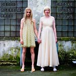
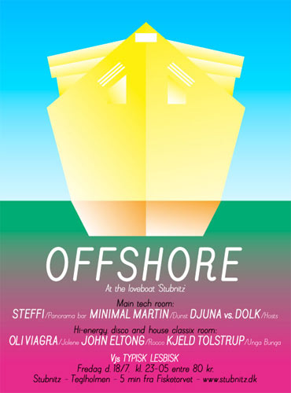

| dunst | Nyhedsbrev |
| København - 14. Juli- 2008 | |
| Music Releases | 2008 |
 Dennis Agerblad Band Album |
Så kom den endelig. Albummet med alle Dennis Agerblad's 14 danske sange fra dunst festerne. |
| Dennis Agerblad Band er hovedsagligt Dennis Agerblad som får hjælp af veninderne Tove Hansen, Delores Düschess La Cour & Gina Jet. Med et blidt transe-kor til de frække sange fra det virkelige liv. Der bydes blandt andet på den stille klassisk lydende pædofil sang "Knud Fest og Sjov" og i den mere dansable genre er der den festlige: "Bol Mig i mit Numsehul". | |
| New music from www. Broken Mirror Records . com | |
| dunst Recommends | 18. Juli - 2008 |
 |
|
| Digt af Hairwerk |
| Som solen så vandet.. luften rørte jorden. 4 elementer.. 3 farver 2 dage og 1 nat. T.o.m.m.y.= trans orgasme med meget ynder eller tom omelet makker malker yver.. Eller tomat og malurt med ymer.. eller tombolaen opererer mette med yvonne? |
| Hvis du vil leve et kedeligt liv uden dunst så afmeld dunst Nyhedsbrev på forsiden af www.dunst.dk |